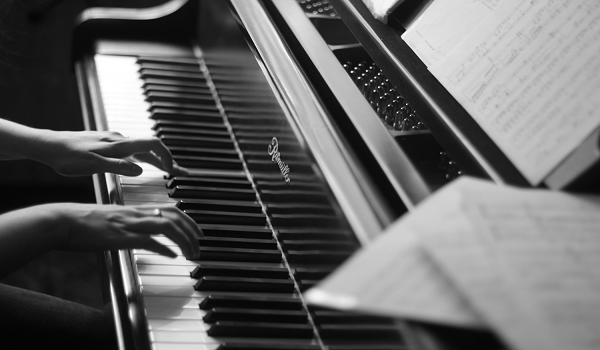
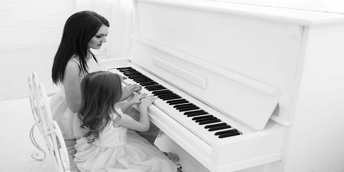

About
钢琴(意大利语:pianoforte)是西洋古典音乐中的一种键盘乐器，有"乐器之王"的美称。由88个琴键(52个白键，36个黑键)和金属弦音板组成。意大利人巴托罗密欧·克里斯多佛利(Bartolomeo Cristofori，1655-1731)在1709年发明了钢琴。钢琴音域范围从A0(27.5Hz)至 C8(4186Hz)，几乎囊括了乐音体系中的全部乐音，是除了管风琴以外音域最广的乐器。钢琴普遍用于独奏、重奏、伴奏等演出，作曲和排练音乐十分方便。演奏者通过按下键盘上的琴键，牵动钢琴里面包着绒毡的小木槌，继而敲击钢丝弦发出声音。钢琴需定时的护理，来保证它的音色不变。

PlayList
| Kiss The Rain | |
| 罗密欧与朱丽叶 | |
| 梦中的婚礼 | |
| 夜空的寂静 | |
| 优美的小调 | |
| 风中的蒲公英 |
Video
Appreciation
Think
有人喜欢钢琴那恬静的声音，它使人仿佛置身云雾中；有人喜欢钢琴那铿锵有力的声音，它使人充满力量，仿佛平静的湖面上,被指腹敲起的一个个音符,坠落,荡起的一阵涟漪,却震撼着聆听者的内心。
生活就像一架钢琴,白键是快乐，黑键是悲伤。但是，没有黑键的钢琴不能合奏出美妙的音乐。你演奏出几分精彩，它就为你流淌出几分美妙。
生活就像一架钢琴,白键是快乐，黑键是悲伤。但是，没有黑键的钢琴不能合奏出美妙的音乐。你演奏出几分精彩，它就为你流淌出几分美妙。
